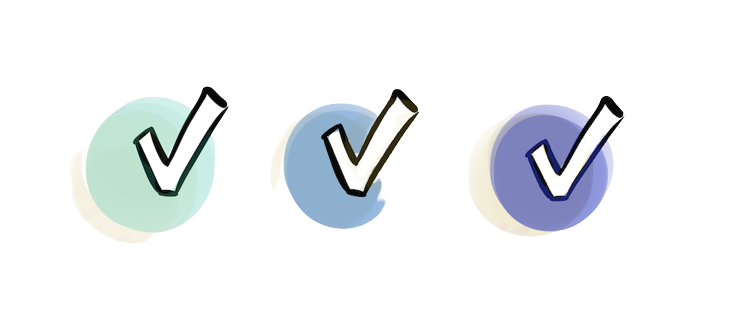

|  |
How to give better employee performance reviews?Dont.Jan 02 , 2018Category : Teamwork |
Number of VisitsNumber |
 
|
This is a question I’ve consistently received over the years, and becomes more pronounced as we enter performance review season.
It’s a particularly salient question given that, from our August 2020 survey of 1,087 managers and employees, 86% said they hold
performance reviews – but only 23% of those people said they were “satisfied” with their performance review process.
In short: 86% of us are doing something that only 23% of us like.
It’s worse than you think.
Not only are a majority of us implementing a process that we’re not satisfied with, but the utility of the process itself is dubious:
A 2019 study by Mercer found that only 2% of companies believe feel their performance process delivers exceptional value. In fact,
Gallup shared how “traditional performance reviews and approaches to feedback are often so bad that they actually make performance
worse about one-third of the time.”
They further discovered that “only 14% of employees strongly agree their performance reviews inspire them to improve.”
Yet, we still do performance reviews.
We do them even though we feel like we’re twisting people’s arms to complete them. We do them even though we dread filling them out,
ourselves.
How did we get here? And, most importantly: Is there a better way?
A long and winding road.
How did we get here?
performance reviews were first introduced as a rating system to help the U.S. military identify and dismiss poor performers.
It was a tool to help with succession planning that was not shared with the soldiers and officers being evaluated. The original
intention of performance reviews was to help the organization – not to help the individuals themselves grow.
Fast forward to the present and our thinking has changed. Today, many companies want their performance reviews to be a tool
used to give feedback and to an employee, so they can know how they can get better. In our survey with 1,087 managers and
employees, we found 70% believed the primary purpose of reviews in an organization is to help a team member develop.
However, traditional performance reviews are oftentimes simultaneously used to determine promotion, compensation, and raises. Other
companies use them as a tool used for legal protection and to justify future firings.
No wonder we can’t quite seem to have performance reviews that feel good or are useful: It’s unclear for many organizations what
the original purpose of the performance review – let alone what we should try to optimize for – is in the first place.
As a result, we’re left with a system with gaping problems when we think about how to give better employee performance reviews.
Here’s what those exact problems of performance reviews are.
A broken process, with 6 distinct problems.
Here are the primary problems of performance reviews…
“So, what’s this really for?”
Performance reviews try to do too many things at once. Many teams will use performance reviews to do some mix of the following:
offering advice on how to improve
setting an employee’s bonus or raise
deciding on a promotion
justifying a future firing
Unfortunately, this diluted focus leads to the performance review not being able to do any of these things well.
“Are you judging me, or coaching me?”
Most performance reviews are tied to compensation and/or ratings. In our survey, we found that 63% of 1,087 people surveyed said
that their performance reviews were tied to compensation. While popular, this backfires. This means the minute you try to offer
feedback during a review, the person on the other side is bracing themselves for whether they got a raise or got promoted… not,
“Oh is this feedback I should internalize in some way.” In fact, studies show how rankings trigger a fight-or-flight response in
the brain. When performance reviews conflate growth with judgment, it damages the likelihood of growth.